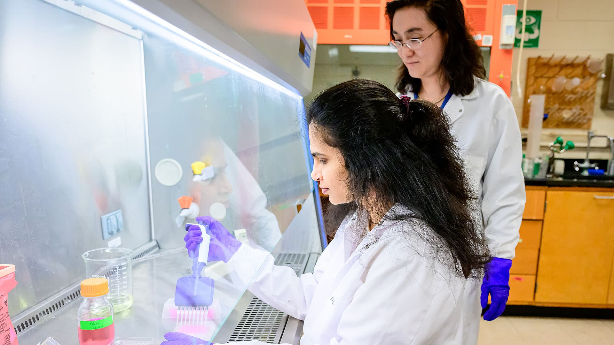

Undergraduate research
A proposed introduction to reading scientific literature, laboratory reasoning, and communicating research.
A proposed home for research training, scientific mentorship, and learning resources in the Fang Lab.
South Dakota State University · December 2004
From a first research experience to independent scholarship, scientific growth begins with thoughtful questions and careful evidence.
PROPOSED EDUCATION CONTENTTraining topics below are a draft framework for lab review. Courses, eligibility, and availability will be confirmed by Prof. Fang.

A proposed introduction to reading scientific literature, laboratory reasoning, and communicating research.
A proposed pathway through question formulation, experimental design, data interpretation, and manuscript development.
Proposed support for independent thinking, collaborative research, grant development, and career preparation.
Viral replication, host–pathogen interactions, and the interpretation of mechanistic studies.
Principles of antigen design, immune protection, and evaluating vaccine research.
Principles of assay design, analytical performance, and diagnostic interpretation.
Critical reading, research presentations, responsible reporting, and scientific writing.
Contact Prof. Fang to discuss your research interests and potential training opportunities.